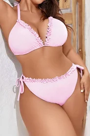

The Stats

Stats are like a girl's bikini.
What it reveals is suggestive, but what it conceals is vital!
So you can draw your own conclusions, but you wont go much wrong with Blenders Pride, Glenlivett Founders Reserve or the Tesco Brandy! ENJOY